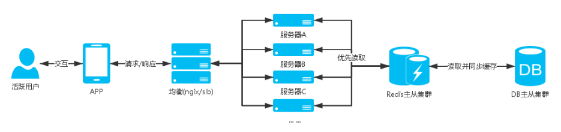

支付宝架构师眼中的高并发架构
点击上方“匠心零度”，选择“设为星标”
做积极的人，而不是积极废人！
来源：my.oschina.net/u/3772106/blog/1793561
前言
高并发经常会发生在有大活跃用户量，用户高聚集的业务场景中，如：秒杀活动，定时领取红包等。
为了让业务可以流畅的运行并且给用户一个好的交互体验，我们需要根据业务场景预估达到的并发量等因素，来设计适合自己业务场景的高并发处理方案。
在电商相关产品开发的这些年，我有幸的遇到了并发下的各种坑，这一路摸爬滚打过来有着不少的血泪史，这里进行的总结，作为自己的归档记录，同时分享给大家。
服务器架构
业务从发展的初期到逐渐成熟，服务器架构也是从相对单一到集群，再到分布式服务。
一个可以支持高并发的服务少不了好的服务器架构，需要有均衡负载，数据库需要主从集群，nosql缓存需要主从集群，静态文件需要上传cdn，这些都是能让业务程序流畅运行的强大后盾。
服务器这块多是需要运维人员来配合搭建，具体我就不多说了，点到为止。
大致需要用到的服务器架构如下：
服务器
均衡负载(如：nginx，阿里云SLB)
资源监控
分布式
数据库
主从分离，集群
DBA 表优化，索引优化，等
分布式
nosql
主从分离，集群
主从分离，集群
主从分离，集群
redis
mongodb
memcache
cdn
html
css
js
image
并发测试
高并发相关的业务，需要进行并发的测试，通过大量的数据分析评估出整个架构可以支撑的并发量。
测试高并发可以使用第三方服务器或者自己测试服务器，利用测试工具进行并发请求测试，分析测试数据得到可以支撑并发数量的评估，这个可以作为一个预警参考，俗话说知己自彼百战不殆。
第三方服务：
阿里云性能测试
并发测试工具：
Apache JMeter
Visual Studio性能负载测试
Microsoft Web Application Stress Tool
实战方案
通用方案
日用户流量大，但是比较分散，偶尔会有用户高聚的情况；
场景： 用户签到，用户中心，用户订单，等
服务器架构图：

说明：
场景中的这些业务基本是用户进入APP后会操作到的，除了活动日(618,双11，等)，这些业务的用户量都不会高聚集，同时这些业务相关的表都是大数据表，业务多是查询操作，所以我们需要减少用户直接命中DB的查询；优先查询缓存，如果缓存不存在，再进行DB查询，将查询结果缓存起来。
更新用户相关缓存需要分布式存储，比如使用用户ID进行hash分组，把用户分布到不同的缓存中，这样一个缓存集合的总量不会很大，不会影响查询效率。
方案如：
用户签到获取积分
计算出用户分布的key,redis hash中查找用户今日签到信息
如果查询到签到信息，返回签到信息
如果没有查询到，DB查询今日是否签到过，如果有签到过，就把签到信息同步redis缓存。
如果DB中也没有查询到今日的签到记录，就进行签到逻辑，操作DB添加今日签到记录，添加签到积分(这整个DB操作是一个事务)
缓存签到信息到redis，返回签到信息
注意这里会有并发情况下的逻辑问题，如：一天签到多次，发放多次积分给用户。
用户订单
这里我们只缓存用户第一页的订单信息，一页40条数据，用户一般也只会看第一页的订单数据
用户访问订单列表，如果是第一页读缓存，如果不是读DB
计算出用户分布的key,redis hash中查找用户订单信息
如果查询到用户订单信息，返回订单信息
如果不存在就进行DB查询第一页的订单数据，然后缓存redis，返回订单信息
用户中心
计算出用户分布的key,redis hash中查找用户订单信息
如果查询到用户信息，返回用户信息
如果不存在进行用户DB查询，然后缓存redis，返回用户信息
其他业务
上面例子多是针对用户存储缓存，如果是公用的缓存数据需要注意一些问题，如下
注意公用的缓存数据需要考虑并发下的可能会导致大量命中DB查询，可以使用管理后台更新缓存，或者DB查询的锁住操作。
我的博文《大话Redis进阶》（http://blog.thankbabe.com/2016/08/05/redis-up/）对更新缓存问题和推荐方案的分享。
以上例子是一个相对简单的高并发架构，并发量不是很高的情况可以很好的支撑，但是随着业务的壮大，用户并发量增加，我们的架构也会进行不断的优化和演变，比如对业务进行服务化，每个服务有自己的并发架构，自己的均衡服务器，分布式数据库，nosql主从集群，如：用户服务、订单服务；
消息队列
秒杀、秒抢等活动业务，用户在瞬间涌入产生高并发请求
场景：定时领取红包，等
服务器架构图：

说明：
场景中的定时领取是一个高并发的业务，像秒杀活动用户会在到点的时间涌入，DB瞬间就接受到一记暴击，hold不住就会宕机，然后影响整个业务；
像这种不是只有查询的操作并且会有高并发的插入或者更新数据的业务，前面提到的通用方案就无法支撑，并发的时候都是直接命中DB；
设计这块业务的时候就会使用消息队列的，可以将参与用户的信息添加到消息队列中，然后再写个多线程程序去消耗队列，给队列中的用户发放红包；
方案如：
定时领取红包
一般习惯使用 redis的 list
当用户参与活动，将用户参与信息push到队列中
然后写个多线程程序去pop数据，进行发放红包的业务
这样可以支持高并发下的用户可以正常的参与活动，并且避免数据库服务器宕机的危险
附加：
通过消息队列可以做很多的服务。
如：定时短信发送服务，使用sset(sorted set)，发送时间戳作为排序依据，短信数据队列根据时间升序，然后写个程序定时循环去读取sset队列中的第一条，当前时间是否超过发送时间，如果超过就进行短信发送。
一级缓存
高并发请求连接缓存服务器超出服务器能够接收的请求连接量，部分用户出现建立连接超时无法读取到数据的问题；
因此需要有个方案当高并发时候时候可以减少命中缓存服务器；
这时候就出现了一级缓存的方案，一级缓存就是使用站点服务器缓存去存储数据，注意只存储部分请求量大的数据，并且缓存的数据量要控制，不能过分的使用站点服务器的内存而影响了站点应用程序的正常运行，一级缓存需要设置秒单位的过期时间，具体时间根据业务场景设定，目的是当有高并发请求的时候可以让数据的获取命中到一级缓存，而不用连接缓存nosql数据服务器，减少nosql数据服务器的压力
比如APP首屏商品数据接口，这些数据是公共的不会针对用户自定义，而且这些数据不会频繁的更新，像这种接口的请求量比较大就可以加入一级缓存；
服务器架构图：

合理的规范和使用nosql缓存数据库，根据业务拆分缓存数据库的集群，这样基本可以很好支持业务，一级缓存毕竟是使用站点服务器缓存所以还是要善用。
静态化数据
高并发请求数据不变化的情况下如果可以不请求自己的服务器获取数据那就可以减少服务器的资源压力。
对于更新频繁度不高，并且数据允许短时间内的延迟，可以通过数据静态化成JSON，XML,HTML等数据文件上传CDN，在拉取数据的时候优先到CDN拉取，如果没有获取到数据再从缓存，数据库中获取，当管理人员操作后台编辑数据再重新生成静态文件上传同步到CDN，这样在高并发的时候可以使数据的获取命中在CDN服务器上。
CDN节点同步有一定的延迟性，所以找一个靠谱的CDN服务器商也很重要
其他方案
对于更新频繁度不高的数据，APP,PC浏览器，可以缓存数据到本地，然后每次请求接口的时候上传当前缓存数据的版本号，服务端接收到版本号判断版本号与最新数据版本号是否一致，如果不一样就进行最新数据的查询并返回最新数据和最新版本号，如果一样就返回状态码告知数据已经是最新。减少服务器压力：资源、带宽等.
分层，分割，分布式
大型网站要很好支撑高并发，这是需要长期的规划设计
在初期就需要把系统进行分层，在发展过程中把核心业务进行拆分成模块单元，根据需求进行分布式部署，可以进行独立团队维护开发。
分层
将系统在横向维度上切分成几个部分，每个部门负责一部分相对简单并比较单一的职责，然后通过上层对下层的依赖和调度组成一个完整的系统
比如把电商系统分成：应用层，服务层，数据层。(具体分多少个层次根据自己的业务场景)
应用层：网站首页，用户中心，商品中心，购物车，红包业务，活动中心等，负责具体业务和视图展示
服务层：订单服务，用户管理服务，红包服务，商品服务等，为应用层提供服务支持
数据层：关系数据库，nosql数据库 等，提供数据存储查询服务
分层架构是逻辑上的，在物理部署上可以部署在同一台物理机器上，但是随着网站业务的发展，必然需要对已经分层的模块分离部署，分别部署在不同的服务器上，使网站可以支撑更多用户访问
分割
在纵向方面对业务进行切分，将一块相对复杂的业务分割成不同的模块单元
包装成高内聚低耦合的模块不仅有助于软件的开发维护，也便于不同模块的分布式部署，提高网站的并发处理能力和功能扩展
比如用户中心可以分割成：账户信息模块，订单模块，充值模块，提现模块，优惠券模块等
分布式
分布式应用和服务,将分层或者分割后的业务分布式部署，独立的应用服务器，数据库，缓存服务器
当业务达到一定用户量的时候，再进行服务器均衡负载，数据库，缓存主从集群
分布式静态资源，比如：静态资源上传cdn
分布式计算，比如：使用hadoop进行大数据的分布式计算
分布式数据和存储,比如：各分布节点根据哈希算法或其他算法分散存储数据

网站分层-图1来自网络
集群
对于用户访问集中的业务独立部署服务器，应用服务器，数据库，nosql数据库。 核心业务基本上需要搭建集群，即多台服务器部署相同的应用构成一个集群，通过负载均衡设备共同对外提供服务， 服务器集群能够为相同的服务提供更多的并发支持，因此当有更多的用户访问时，只需要向集群中加入新的机器即可, 另外可以实现当其中的某台服务器发生故障时，可以通过负载均衡的失效转移机制将请求转移至集群中其他的服务器上，因此可以提高系统的可用性
应用服务器集群
nginx 反向代理
slb
… …
(关系/nosql)数据库集群
主从分离，从库集群

通过反向代理均衡负载-图2来自网络
异步
在高并发业务中如果涉及到数据库操作，主要压力都是在数据库服务器上面，虽然使用主从分离，但是数据库操作都是在主库上操作，单台数据库服务器连接池允许的最大连接数量是有限的
当连接数量达到最大值的时候，其他需要连接数据操作的请求就需要等待有空闲的连接，这样高并发的时候很多请求就会出现connection time out 的情况
那么像这种高并发业务我们要如何设计开发方案可以降低数据库服务器的压力呢？
如：
自动弹窗签到，双11跨0点的时候并发请求签到接口
双11抢红包活动
双11订单入库
等
设计考虑：
逆向思维，压力在数据库，那业务接口就不进行数据库操作不就没压力了
数据持久化是否允许延迟？
如何让业务接口不直接操作DB，又可以让数据持久化？
方案设计：
像这种涉及数据库操作的高并发的业务，就要考虑使用异步了
客户端发起接口请求，服务端快速响应，客户端展示结果给用户，数据库操作通过异步同步
如何实现异步同步？
使用消息队列，将入库的内容enqueue到消息队列中，业务接口快速响应给用户结果(可以温馨提示高峰期延迟到账)
然后再写个独立程序从消息队列dequeue数据出来进行入库操作，入库成功后刷新用户相关缓存，如果入库失败记录日志，方便反馈查询和重新持久化
这样一来数据库操作就只有一个程序(多线程)来完成，不会给数据带来压力
补充：
消息队列除了可以用在高并发业务，其他只要有相同需求的业务也是可以使用，如：短信发送中间件等
高并发下异步持久化数据可能会影响用户的体验，可以通过可配置的方式，或者自动化监控资源消耗来切换时时或者使用异步，这样在正常流量的情况下可以使用时时操作数据库来提高用户体验
异步同时也可以指编程上的异步函数，异步线程，在有的时候可以使用异步操作，把不需要等待结果的操作放到异步中，然后继续后面的操作，节省了等待的这部分操作的时间

缓存
高并发业务接口多数都是进行业务数据的查询，如：商品列表，商品信息，用户信息，红包信息等，这些数据都是不会经常变化，并且持久化在数据库中
高并发的情况下直接连接从库做查询操作，多台从库服务器也抗不住这么大量的连接请求数（前面说过，单台数据库服务器允许的最大连接数量是有限的）
那么我们在这种高并发的业务接口要如何设计呢？
设计考虑：
还是逆向思维，压力在数据库，那么我们就不进行数据库查询
数据不经常变化，我们为啥要一直查询DB？
数据不变化客户端为啥要向服务器请求返回一样的数据？
方案设计：
数据不经常变化，我们可以把数据进行缓存，缓存的方式有很多种，一般的：应用服务器直接Cache内存，主流的：存储在memcache、redis内存数据库
Cache是直接存储在应用服务器中，读取速度快，内存数据库服务器允许连接数可以支撑到很大，而且数据存储在内存，读取速度快，再加上主从集群，可以支撑很大的并发查询
根据业务情景，使用配合客户端本地存，如果我们数据内容不经常变化，为啥要一直请求服务器获取相同数据，可以通过匹配数据版本号，如果版本号不一样接口重新查询缓存返回数据和版本号，如果一样则不查询数据直接响应
这样不仅可以提高接口响应速度，也可以节约服务器带宽，虽然有些服务器带宽是按流量计费，但是也不是绝对无限的，在高并发的时候服务器带宽也可能导致请求响应慢的问题
补充：
缓存同时也指静态资源客户端缓存
cdn缓存，静态资源通过上传cdn，cdn节点缓存我们的静态资源，减少服务器压力

面向服务
SOA面向服务架构设计
微服务更细粒度服务化，一系列的独立的服务共同组成系统
使用服务化思维，将核心业务或者通用的业务功能抽离成服务独立部署，对外提供接口的方式提供功能。
最理想化的设计是可以把一个复杂的系统抽离成多个服务，共同组成系统的业务，优点：松耦合，高可用性，高伸缩性，易维护。
通过面向服务化设计，独立服务器部署，均衡负载，数据库集群，可以让服务支撑更高的并发
服务例子：
用户行为跟踪记录统计
说明：
通过上报应用模块，操作事件，事件对象，等数据，记录用户的操作行为
比如：记录用户在某个商品模块，点击了某一件商品，或者浏览了某一件商品
背景：
由于服务需要记录用户的各种操作行为，并且可以重复上报，准备接入服务的业务又是核心业务的用户行为跟踪，所以请求量很大，高峰期会产生大量并发请求。
架构：
nodejs WEB应用服务器均衡负载
redis主从集群
mysql主
nodejs+express+ejs+redis+mysql
服务端采用nodejs,nodejs是单进程（PM2根据cpu核数开启多个工作进程），采用事件驱动机制，适合I/O密集型业务，处理高并发能力强
业务设计：
并发量大，所以不能直接入库，采用：异步同步数据,消息队列
请求接口上报数据，接口将上报数据push到redis的list队列中
nodejs写入库脚本，循环pop redis list数据，将数据存储入库，并进行相关统计Update，无数据时sleep几秒
因为数据量会比较大，上报的数据表按天命名存储
接口：
上报数据接口
统计查询接口
上线跟进：
服务业务基本正常
每天的上报表有上千万的数据
冗余，自动化
当高并发业务所在的服务器出现宕机的时候，需要有备用服务器进行快速的替代，在应用服务器压力大的时候可以快速添加机器到集群中，所以我们就需要有备用机器可以随时待命。 最理想的方式是可以通过自动化监控服务器资源消耗来进行报警，自动切换降级方案，自动的进行服务器替换和添加操作等，通过自动化可以减少人工的操作的成本，而且可以快速操作，避免人为操作上面的失误。
冗余
数据库备份
备用服务器
自动化
自动化监控
自动化报警
自动化降级
通过GitLab事件，我们应该反思，做了备份数据并不代表就万无一失了，我们需要保证高可用性，首先备份是否正常进行，备份数据是否可用，需要我们进行定期的检查，或者自动化监控， 还有包括如何避免人为上的操作失误问题。(不过事件中gitlab的开放性姿态，积极的处理方式还是值得学习的)
总结
高并发架构是一个不断衍变的过程，冰洞三尺非一日之寒，长城筑成非一日之功 。打好基础架构方便以后的拓展，这点很重要。
END
如果读完觉得有收获的话，欢迎点【好看】，关注【匠心零度】，查阅更多精彩历史！！！

让我“好看”